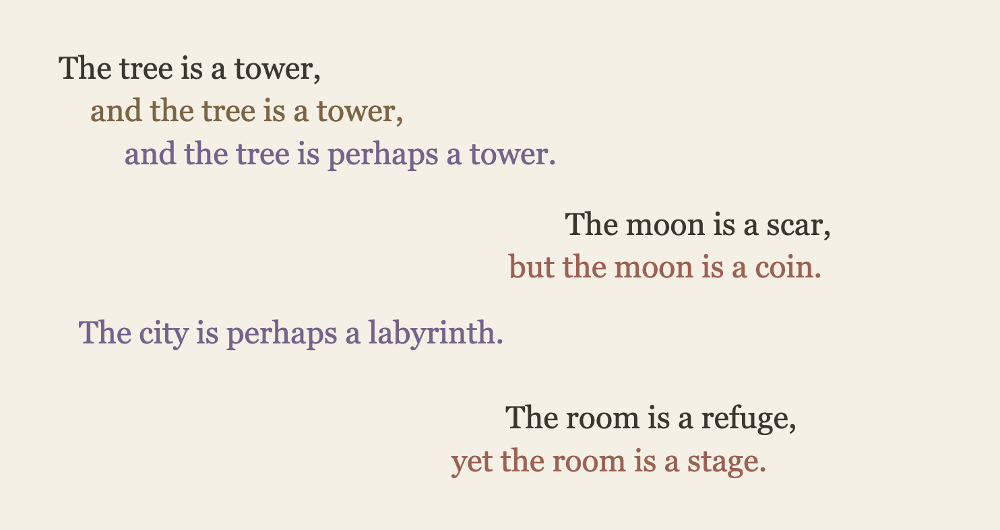

The Inheritance of Form

What must a culture inherit in order to remain capable of invention?
I'm interested in the primitives and parameters of style, and what becomes possible when we can manipulate, combine and evolve them. A writer inherits more than words. They inherit ways of arranging language, constructing images and making meaning through form. I want to explore what happens when these techniques become creative materials in their own right, available for others to modify and build upon.
I'm approaching this through interactive studies of Shakespeare, a proposed playable writing instrument and an agent-based simulation of twelve writers who collectively compose an evolving work of concrete poetry. The simulation lets me experiment with how writers acquire, share and forget techniques, and how these processes affect what they subsequently invent.
Reading Shakespeare through play
Two interactive studies in p5.js explore the opening quatrain of Shakespeare's Sonnet 73. I'm interested in taking apart the formal relationships in a poem and seeing what happens when we can manipulate them.
or none, or few
When yellow leaves, or none, or few, do hang
In ten syllables, Shakespeare gives us an image, takes it away, and partially restores it. Select each phrase to see the leaves fall and return. Change the comma pauses and wind, or play through the line against its ten-syllable rhythm. I'm interested in how the timing of a correction changes the image we form while reading.
bare ruined choirs
Bare ruined choirs, where late the sweet birds sang.
The bare branches resemble the ruins of a choir; birdsong recalls the voices that once filled it. Move between boughs and choir, and vary bareness, ruination and the presence of singers independently. I'm interested in which relationships sustain the metaphor when we change one of its parts.
The Inheritance of Form
In the NetLogo simulation, twelve writers begin with a small palette of five primitives: echo (repetition), correction (offering an alternative), contrast, omission and qualification. Each has two parameter settings. Writers can combine these primitives into reusable techniques, copy one another's writing, learn and forget.
The model compares two conditions: sharing finished writing alone, and sharing writing alongside the techniques used to produce it. Sharing ends after sixty rounds; the writers continue to compose and invent for another thirty.
The light poem shows what the writers actually wrote. The dark palette view applies retained techniques to the same starting words, showing what the writers can still construct and how many of them possess each technique. Color identifies the primitives, and spatial arrangement makes their relationships visible.
The simulation uses a limited vocabulary and does not measure literary quality. I'm interested in working with it as a generative medium while investigating how the circulation of creative knowledge affects subsequent invention.
These experiments inform Old Words New, a playable writing instrument, and Inheritance, a proposed computational engine for manipulating, combining and evolving the primitives and parameters of style.
Research and prototypes in progress at UC Davis.